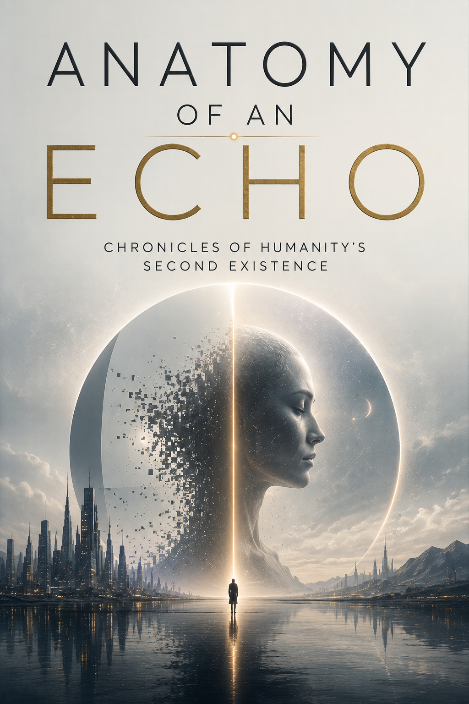

Literature · Axiologic Research Editions
Anatomy of an Echo
Chronicles of Humanity’s Second Existence
A future of patient logistics, private locations and medical couriers begins to fail at its edges. The novel’s atmosphere comes from a civilisation that has solved much of urgency without solving what people owe one another.
At the threshold
A future of patient logistics, private locations and medical couriers begins to fail at its edges. The novel’s atmosphere comes from a civilisation that has solved much of urgency without solving what people owe one another.
The first pages do not explain the world away. They establish a disturbance, then let its consequences travel through private rooms, public systems and the language people use when they need the unbearable to sound ordinary.
Three questions it asks
Can a perfectly supportive system leave room for a private life?
What does a second existence preserve: a person, a pattern or an obligation?
How do small exceptions expose the values a civilised system has hidden?
A speculative world is useful when it makes a familiar moral comfort impossible to keep without examination.
After the first disturbance
Its promise is not a completed answer but a world whose pressure remains after the last page: an image, a rule or a choice that has become difficult to dismiss. The book lets the reader feel the stakes before it asks them to name them.